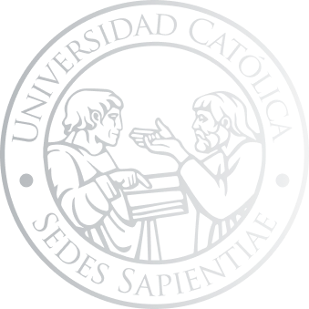
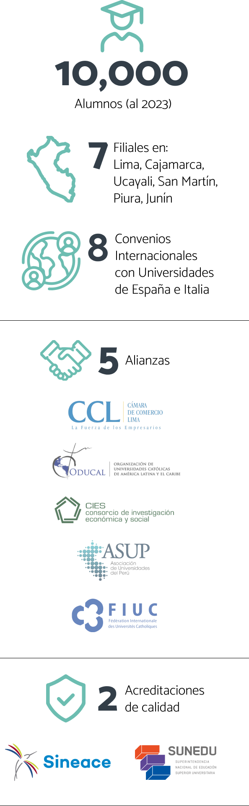

UCSS ONLINE
Alcanza tus sueños y los de tu familia
CARRERAS UNIVERSITARIAS
MAESTRÍAS
#AvanzaConUCSSonline
UCSS ONLINE
¡Transforma nuestro país y el mundo con valores!
Carreras universitarias a distancia
#AvanzaConUCSSonline
CARRERAS Y MAESTRÍAS ONLINE
¿Por qué estudiar en UCSS online?
25 años formando profesionales empáticos y solidarios para resolver los desafíos empresariales con valores
Tecnología moderna para estudiar desde cualquier dispositivo

Profesores capacitados, con títulos avanzados y experiencia en su sector

Intercambios con universidades en España e Italia
Precios alcanzables y facilidades de pago

Acompañamiento personalizado con mentores durante toda tu carrera
CARRERAS Y MAESTRÍAS ONLINE
Conoce nuestra oferta online
CARRERAS
Esta modalidad se denomina a distancia, ya que la mayoría de sus semestres los estudias de forma virtual y en las materias que tienen componente práctico deberás asistir a la sede correspondiente (solamente en los últimos semestres). Esta modalidad es ideal para gente que trabaja.
*El porcentaje (%) de clases presenciales podrá variar en función de la normatividad peruana.
Quiero saber másMAESTRÍAS
¿Estás buscando avanzar en tu carrera y destacarte en tu campo? Una maestría online puede ser la opción ideal para ti. Adquiere habilidades y conocimientos especializados en tu área de especialización y conviértete en un experto en tu campo para destacarte en el mercado laboral.
Quiero saber másCARRERAS Y MAESTRÍAS ONLINE
Logros Universidad Católica Sedes Sapientiae


CARRERAS Y MAESTRÍAS ONLINE
Preguntas frecuentes
Aquí encontrarás respuestas a algunas de las preguntas que recibimos con más frecuencia.
¿UCSS virtual o UCSS online es la Universidad Católica Sedes Sapientiae?
Sí, somos la unidad online de la Universidad Católica Sedes Sapientiae. Nuestras comunicaciones las encontrarás como UCSS virtual o UCSS online. Esta unidad ha sido diseñada para brindarte máxima flexibilidad a la hora de estudiar una carrera universitaria de excelencia de forma virtual, ya que puedes acomodar tus tiempos y tus compromisos a clases en vivo, grabadas y horarios adaptados a tu forma de vida.
¿UCSS online es una de las universidades online reconocidas por SUNEDU?
Sí, la Universidad Católica Sedes Sapientiae está reconocida por SUNEDU. Ofrecemos programas académicos de calidad especiales para gente que trabaja o cualquier persona que quiera realizar una carrera o maestría virtual y nos comprometemos a brindar una educación superior accesible y flexible a través de la virtualidad. Conoce nuestras carreras y maestrías virtuales.
¿UCSS hace parte de las universidades en línea de Perú?
UCSS es una universidad tradicional con oferta educativa en modalidad presencial, y gracias a la virtualidad, ahora ofrecemos educación online/virtual, tal y como lo hace una universidad en línea. Nuestros programas en modalidad presencial, así como también nuestros programas virtuales son de calidad.
¿Cuáles son las ventajas de estudiar en una universidad online en Perú?
Las universidades online en Perú ofrecen flexibilidad horaria, acceso desde cualquier lugar con conexión a internet y una amplia variedad de programas académicos. Además, permiten a los estudiantes gestionar sus carreras de manera autónoma y adaptar su aprendizaje a sus necesidades individuales. Es importante verificar la validez y la reputación de la universidad antes de inscribirse en cualquier programa de estudio en línea. En UCSS virtual contamos con 25 años de experiencia, tenemos diversas acreditaciones y estamos reconocidos por SUNEDU.
¿Obtendré un título universitario online?
Recibirás un título profesional tradicional, tal y como lo recibirías si estudiaras en la modalidad presencial. Los títulos universitarios, ya sean obtenidos de manera presencial o virtual (semipresencial o a distancia), tienen la misma validez y reconocimiento, la modalidad no aparece en el diploma.
¿Qué oportunidades laborales tendré al estudiar en UCSS?
En UCSS tenemos una ventana laboral y ferias laborales, cuyo resultado ha sido que el 92% de nuestros egresados accedan al mercado laboral en puestos relacionados con sus estudios. Además, el 66% de los alumnos de los últimos ciclos ya se desempeñan en puestos vinculados a su profesión.
¿La universidad cuenta con convenios internacionales?
A través de las diferentes relaciones internacionales con otras universidades en todo el mundo, en UCSS virtual contamos con beneficios como tener profesores extranjeros invitados, brindar la oportunidad de enviar a estudiantes a complementar sus estudios en otras universidades y, por parte de algunas facultades, obtener una doble titulación.
¿Puedo acceder a una beca en UCSS?
En UCSS puedes optar por 1/2 beca para los primeros puestos, 1/4 de beca para hermanos de alumnos y 1/4 beca para tercio superior.
¿Qué carreras hay para gente que trabaja?
En UCSS virtual hemos diseñado diferentes programas tanto de pregrado como de postgrado, los cuales son:
- Carrera de Administración a distancia
- Carrera de Contabilidad a distancia
- Carrera de Derecho a distancia
- Carrera de Economía a distancia
- Maestría en Administración de Negocios y Finanzas Internacionales - MBA Internacional online
- Maestría en Administración Pública online
- Maestría en Bioética y Bioderecho online
- Maestría en Gestión e Innovación Educativa online
- Maestría en Psicopedagogía y Orientación Tutorial Educativa online
¿Puede variar el porcentaje de virtualidad?
Los programas académicos de la universidad se ajustan a los porcentajes de virtualidad y presencialidad establecidos por la normativa vigente. En caso de modificaciones en estos porcentajes, los programas se adaptarán en consecuencia, por lo que los alumnos aceptan sujetarse a dichos cambios.